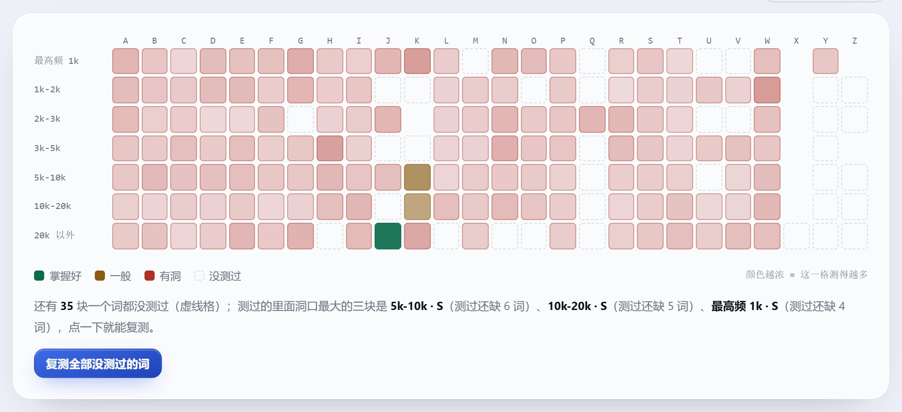
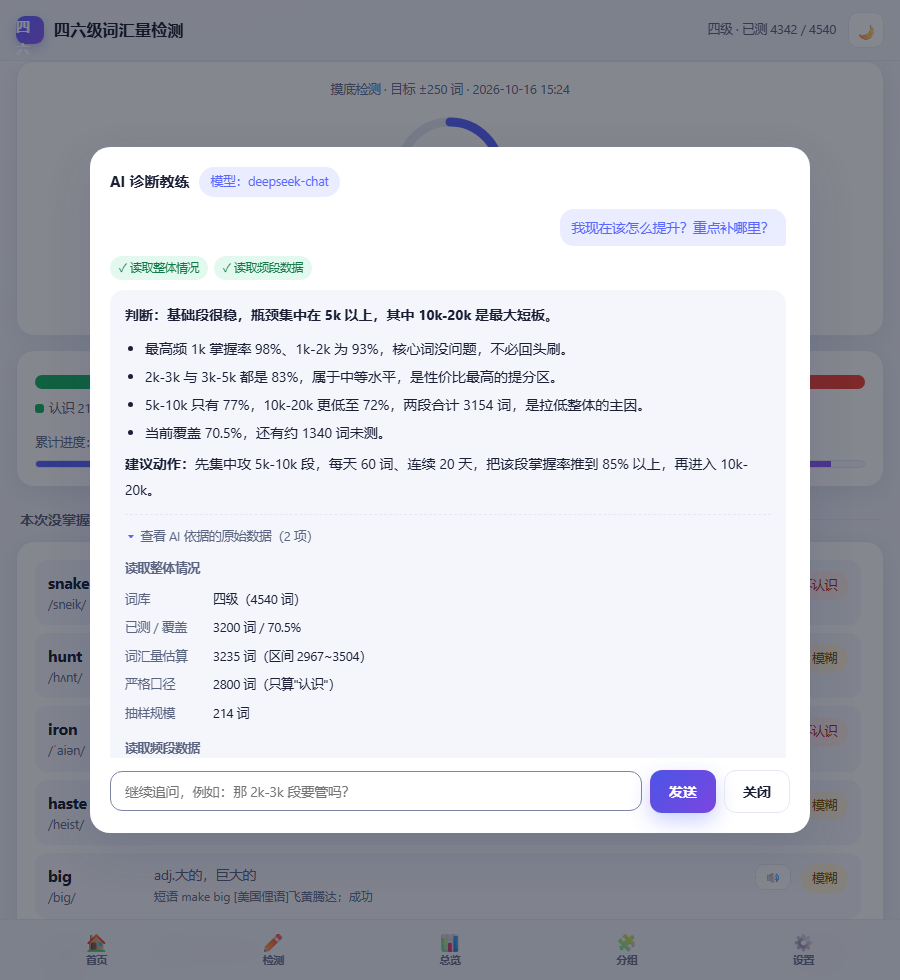

四六级词汇量检测 · 技术文档
项目名称：四六级词汇量检测（CET Vocabulary Profiler） ｜ 版本：v1.0 ｜ 文档日期：2026-10-29
参赛赛事：筑视界·码绘交互 —— Web 前端开发创意技能大赛 ｜ 选题方向：AI 教育与学习平台
作者：李壹铭 ｜ 广东亚视演艺职业学院 · 人工智能学院 ｜ 单人作品
代码仓库：https://github.com/whiteyuexi/cet4-vocab-check
7,175词条（全部带音标）
9,204英中对照例句
427条离线断言
2.11 MB单文件产物
0运行时外部依赖
1 项目概述
1.1 一句话定位
这是一个词汇量测量工具，不是背单词软件。用户花 3 分钟测出自己有多少词量、误差多大、薄弱在哪个词频段，
再决定背什么。背单词这件事仍然交给用户习惯的工具——本产品只负责"测准"和"开出补词清单"。
1.2 交付物与完成度
| 交付物 | 内容 | 状态 |
|---|
| Web 单文件产物 | index.html 2.11 MB，词库/例句/立绘/样式/脚本全部内联，双击即用、断网可用 | 完成 |
| 评委版产物 | 同一份产物＋内联作者 Key，开箱即可演示在线 AI 诊断（仓库版不含任何密钥） | 完成 |
| 微信小程序 | 同源引擎的移动端版本，5 个页面，主包 1.56 MB，可直接导入开发者工具 | 完成 |
| 文档 | 本技术文档（PDF）、产品介绍（HTML）、功能总览、报告系列 01–18、README / NEXT / LICENSING | 完成 |
| 演示材料 | 路演稿、详细资料稿（含附录）、演示视频分镜脚本 | 完成 |
| 自动化测试 | 11 个套件 / 427 条离线断言（另 7 条联网断言），全绿 | 完成 |
1.3 三个亮点
| 亮点 | 具体是什么 | 怎么验证 |
|---|
| ① 敢写误差 | 结果永远是"数字 + 95% 区间 + 严格/折中两套口径"，题量由用户设定的目标精度决定，而不是固定 20 题 | 首页大数字下方即区间；改目标精度看题量与区间宽度同时变化 |
| ② 结论可执行 | 输出到"先补哪一段、哪些词、每天几个、几天补完"，并按「缺口 × 词频权重」排序 | 报告页补词清单；每条可直接开始复测 |
| ③ 离线可用且 AI 不编数字 | 单文件零依赖、断网可用；有 AI 时 AI 只解释数据，所有数字来自工具返回值 | 屏蔽网络后跑 20 项断言；AI 面板看工具调用标签与依据面板 |
1.4 技术栈
| 前端 | 原生 HTML / CSS / JavaScript（ES5 语法，无框架、无构建期依赖注入），单文件交付 |
| 后端（可选） | Node.js 原生 http + SSE，无 Web 框架、无第三方运行时依赖 |
| 数据 | 词库 JSON（7,175 词）、Tatoeba 英中语料（9,204 句），构建期裁剪后内联 |
| AI | OpenAI 兼容协议（DeepSeek / 通义千问 / 智谱 GLM）＋ 本地 Ollama ＋ 确定性规则引擎兜底 |
| 构建/测试 | Node 18+；jsdom 做页面级测试，Chrome DevTools Protocol 做真实浏览器断言，python-pptx 做 PPT 结构交叉校验 |
2 需求分析
2.1 用户画像与场景
| 用户 | 场景与核心诉求 |
|---|
| 备考四六级的学生 | 想快速知道"我现在什么水平、差在哪、先补什么"，不愿意先做 1000 道题 |
| 需要验证复习效果的人 | 背了两周，想知道涨的这点分是真进步还是抽样噪声 |
| 英语教师 / 班干部 | 给学生做词汇摸底，需要能导出、不联网、数据不外泄 |
| 共用电脑的用户 | 实验室或宿舍同一台机器多人使用，数据必须互相隔离 |
2.2 功能需求
| 编号 | 需求 | 状态 |
|---|
| F1 | 四/六级双词库检测（4,540 / 5,716 词），共用一份作答记录 | 完成 |
| F2 | 五种检测入口：快速摸底、高精度、完整检测、分组检测、薄弱词复测 | 完成 |
| F3 | 结果给出词汇量 + 95% 区间 + 两套口径 + 区间随题量收窄 | 完成 |
| F4 | 七段词频剖面与「缺口 × 词频权重」优先级排序 | 完成 |
| F5 | 等级评估（S/A/B+/B/C/D）＋ 高频段地基封顶 | 完成 |
| F6 | 多轮检测与逐词差分（真学会 / 背了又忘 / 掉档） | 完成 |
| F7 | 词汇地图：七段 × 26 字母 = 182 格，点格子直接复测 | 完成 |
| F8 | AI 诊断：三档通路、工具调用、建议可点、图表可反向提问 | 完成 |
| F9 | 自定义词书导入（txt / csv / 粘贴），并明确"不换算成词汇量"的边界 | 完成 |
| F10 | 使用者档案：同机多人数据隔离，可切换/改名/删除 | 完成 |
| F11 | 导出：未掌握词表 CSV、作答备份 JSON、报告文本、打印 PDF | 完成 |
| F12 | 回访卡：隔几天再打开，用上次结果给出三段结论 | 完成 |
| F13 | 每日可投入时间：分钟 → 每天词数 → 四处文案统一 | 完成 |
| F14 | 一键生成六个等级的示例账号（演示用） | 完成 |
| F15 | 语音朗读单词（依赖系统语音引擎） | 完成 |
2.3 非功能需求
| 维度 | 要求 | 达成方式 |
|---|
| 离线可用 | 断网、无外部资源、无同目录依赖也能完整使用 | 单文件内联一切；断网跑 20 项断言 |
| 隐私 | 逐题作答不出本机，只把汇总数据交给可选的大模型 | localStorage 存储；上行字段白名单 |
| 性能 | 首屏 < 300 ms（本机），交互不卡顿 | 无框架、无虚拟 DOM；动效只动 transform/opacity |
| 可访问性 | 键盘可操作、对比度达标、尊重减少动效 | 焦点管理 + inert + 实测 4.83:1 / 5.72:1 |
| 可维护 | 改一处生效一处，回归可自动验证 | 427 条断言 + 11 个套件；产物可复现 |
| 移动端 | 390 px 宽可用 | 响应式；实测无横向溢出、顶栏单行 |
2.4 明确不做的边界
| 不做背单词 | 没有复习队列、没有打卡、没有提醒推送——那是另一条重资产赛道 |
| 不做账号与云同步 | 没有登录、没有服务器存档；换设备靠导出/导入 JSON |
| 不做向量库 RAG | embedding + 向量库会引入几十 MB 权重，直接毁掉"单文件、断网可用" |
| 不从自定义词书外推词汇量 | 自定义词书是有偏样本，只报"对这本书的掌握率"，界面上常驻提示 |
3 系统架构设计
3.1 整体架构
┌────────────────────────── 单个 index.html（2.11 MB） ──────────────────────────┐
│ │
│ 数据层 词库 7,175 词 · 例句 9,204 句 · 桌宠立绘 10 张（全部内联） │
│ │ │
│ 引擎层 estimate() · stratEstimate() · bandProfile() · vocabMap() │
│ levelReport() · roundSnapshot()/roundDiff() · perDayWords() │
│ │ │
│ 应用层 答题控制器（会话/进度/收工判定）· 报告生成 · 词书解析 · 回访卡规则 │
│ │ │
│ 视图层 首页 / 检测 / 分组 / 总览 / 报告 / 设置 + 入场页 + 桌宠 + 视效层 │
│ │ │
│ AI 通道 ① 自带 Key 直连 ② 作者额度（可选） ③ 本地确定性规则引擎 │
└──────────────────────────────────────────────────────────────────────────────┘
│ 可选、非必需
▼
server/（Node 原生 http + SSE）──► 大模型（OpenAI 兼容 / Ollama）
├─ agent.mjs 工具调用循环（最多 3 轮）
├─ tools.mjs 8 个只读工具 + 1 个动作工具
└─ corpus.mjs 9,204 句语料的倒排索引与可读性排序
3.2 模块划分
| 文件 | 规模 | 职责 |
|---|
| src/app.part1.js | 1,492 行 | 状态与存储、词库与频段、抽样与估计、等级报告、回访卡、演示档案、使用者档案 |
| src/app.part2.js | 431 行 | 答题引擎：题面、作答判定、撤销、跳过、收工、结算 |
| src/app.part3.js | 922 行 | 结果页、总览、报告、设置、事件分发 |
| src/app.part4.js | 936 行 | AI 面板、三档通路、工具调用可视化、动作白名单 |
| src/app.part5.js | 816 行 | 2.5D 桌宠：行为、悬空物理、守卫、气泡 |
| src/app.part6.js | 542 行 | 等级报告页与多轮对比 |
| src/app.part7.js | 378 行 | 入场页与视效层 |
| src/app.part8.js | 330 行 | 自定义词书解析 / 预览 / 保存 |
| build.js | — | 把 CSS/JS/词库/例句/立绘按固定顺序拼进 index.template.html |
| server/ | 约 400 行 | 可选后端：静态托管 + Agent 循环 + 工具层 + 语料检索 |
3.3 数据模型与存储
| 作答状态 | 按词下标存 1 个字节：0 不认识 / 1 模糊 / 2 认识 / 缺失即未测 |
| 轮次归档 | 聚合快照（词汇量、双口径、七段、等级）＋ 逐词 2 bit 位图（7,175 词约 1.8 KB），最多保留 12 轮 |
| 词表指纹 | FNV-1a，形如 7175:xxxx；指纹不一致时只做聚合对比，不硬算逐词差异 |
| 存储键 | cet4vocab_profiles（档案表）、cet4vocab_v1（首个档案，兼容旧数据）、cet4vocab_v1::<id>（其余档案） |
| 容量估算 | 单轮约 1.8 KB 位图 + 少量聚合字段；localStorage 5 MB 可存上千轮，实际限制在 12 轮 |
3.4 构建与两种产物
node build.js # 仓库版：不含任何密钥，可公开
node build.js --with-key # 评委版：内联作者 Key，开箱可演示在线 AI
# 产物不写入构建时间戳，同样源码构建出同样文件（可用 SHA256 比对）
提交前必须有一步 node scripts/check-no-key.mjs：扫描产物与文档，确认没有明文 Key 泄漏。
仓库里 private/ai-key.json 与 .env* 均被 gitignore。
3.5 关键设计决策
| 决策 | 理由 |
|---|
| 单文件交付 | 学生真实环境是"发个文件就能用"，不装环境、不被墙、不怕链接失效；代价是词库要裁剪、体积要控在 2 MB 出头 |
| 零运行时依赖 | 不引框架，避免"三年后依赖装不上"；统计与渲染都是手写，代码可读、可审计 |
| AI 可选而非必需 | 大模型要花钱、可能没网；把它做成"增强项"，没有它功能不残缺 |
| 数字由本机算 | 模型的算术不可靠；所有统计量在浏览器内算完，模型只解释与排序 |
| 同一套引擎多端复用 | 小程序版直接复用同一份引擎逻辑，用一致性测试保证逐字段相等，避免"两端数值不一样" |
4 AI 技术方案
4.1 选型理由：AI 放在哪里、不放在哪里
AI 在这类教育工具里最容易犯两个错：一是替用户算数（算出好看但不准的数字），二是把它当必需品（没网就废）。
本项目的取舍是：统计与判定全部由确定性代码完成，AI 只负责把已经算好的数据翻译成行动建议。
| 环节 | 由谁负责 | 理由 |
|---|
| 抽样、区间估计、等级判定 | 确定性代码 | 可复现、可断言；同一份数据永远得出同一个数 |
| 题目排序、分组边界 | 确定性代码 | FNV-1a 定序，保证不同设备抽到同一批词 |
| "我该先补哪一段"的排序 | 确定性代码给出候选 | 缺口 × 词频权重是硬规则，模型不参与打分 |
| 解释、追问、把结论组织成计划 | 大模型 | 这类任务没有唯一答案，正适合语言模型 |
| 没有模型时的同等能力 | 本地规则引擎 | 保证"永远可用"，且在数据不足时敢说"下不了结论" |
4.2 集成方式：三种形态与三档通路
| 档位 | 触发条件 | 能力 |
|---|
| ① 自带 Key | 用户在设置里填了自己的 API Key | 直连厂商、不限次数；Key 只存本机，导出备份时剔除 |
| ② 作者额度 | 完成一次有效检测换取 1 次深度诊断（仅评委版内联了作者 Key） | 在线大模型；额度用尽自动降级 |
| ③ 本地方案 | 以上都不满足、或没有后端 | 确定性规则诊断，不联网、不限次、按真实数据出结论 |
A.aiTier = function () {
if (A.S.userKey && A.S.userKey.key) return 'user'; // 用户自己付费，优先
if (AUTHOR_KEY && A.aiQuota().left > 0) return 'author'; // 作者额度
return 'local'; // 永远可用的兜底
};
额度是"完成检测换来的"，所以不能白给：同一轮、同口径只授予一次（用 kind:bank:round.startedAt 去重），
整库检测要求测过 ≥100 词且覆盖 ≥95%，随机摸底要求 ≥80 题且达到目标精度。
4.3 Agent 与工具调用
后端是一个极简的函数调用循环：模型说"我要看频段数据"，服务端执行工具、把 JSON 结果回灌，直到模型给出回答或超过 3 轮。
关键是模型的输出永远不直接进界面数字位——界面上的数字来自工具返回值。
| 工具 | 作用 |
|---|
| get_profile | 取整体情况：词汇量、区间、双口径、覆盖率、四态统计 |
| get_band_profile | 取七段词频掌握率与缺口 |
| get_weak_words | 取没掌握 / 没测过的词清单 |
| make_plan | 按每日可投入时间折算补词计划 |
| get_examples | 按需检索真实例句（RAG） |
| get_round_diff | 取多轮差分：真学会 / 背了又忘 / 掉档 |
| get_map_cell | 取词汇地图某一格的数据 |
| get_quota | 取当前 AI 档位与剩余额度 |
| suggest_actions | 动作工具：给出可点按钮（go / start / review / ask） |
| 循环上限 | MAX_TOOL_ROUNDS = 3，避免模型无限取数 |
| 输出预算 | maxTokens = 1000；历史只带最近 6 条，控制成本 |
| 流式协议 | SSE 事件：mode / tool / delta / actions / done / error |
| 可视化 | 界面把"这次调了哪几个工具、拿到了什么"渲染成标签，回答下方可展开"本次发送给模型的数据" |
4.4 提示工程：三条硬规矩
你是「四六级词汇量检测」工具里的诊断教练。规则：
1) 所有数字必须来自工具返回值，不许自己估算或编造；
2) 数据不足（样本 < 30 或覆盖率 < 95%）时直接说"样本太少，下不了结论"；
3) 掌握率只有两种口径：严格（只算认识）与折中（模糊算一半），不要自创第三种。
这三条不是写在文档里的愿望，而是被断言守着的：check-ai-link.mjs 会验证"动作按钮真的执行"、
"非法动作被拒绝"、"越界参数被规整"；check-ai-tiers.mjs 验证额度授予/扣减/下限保护。
4.5 轻量 RAG：例句是查出来的
| 语料 | Tatoeba 英中对照句 9,204 句（CC-BY 2.0 FR），覆盖 5,138 个词 |
| 索引 | 构建期建"单词 → 候选句"倒排索引，并按可读性打分：词数接近 10–12、长度 60–80 字符、主语开头加分 |
| 运行期 | 模型需要举例时调 get_examples，返回真实句子 + 中文译文 + 来源标注 |
| 为什么不用向量库 | 向量方案要拖入几十 MB 权重，与"单文件 + 断网可用"直接冲突；本例的检索需求是精确命中单词，倒排索引足够且可解释 |
4.6 双向联动与动作白名单
| 图 → AI | 点频段条的「问」或 Shift + 点地图格子，问题文本里自动带上该块的真实数字，用户不用复述 |
| AI → 图 | 回答末尾给出可点按钮；点击后真的执行（复测该段 / 开一轮摸底 / 跳转页面） |
| 安全边界 | 模型输出被当作不可信输入：动作类型必须在白名单内，路由必须合法，target 夹到 {150,250,400}，频段夹到 0–6，问题文本截断到 120 字 |
| 按钮绑定 | 每个按钮携带自己的动作对象（不是全局下标），避免"点了执行的是上一组的动作" |
4.7 优化策略
| 策略 | 做法与效果 |
|---|
| 降级链 | Agent（带工具）→ 直连模型（无工具）→ 本地规则。任一环失败都不弹错误框，而是在回答里说明当前形态 |
| 成本控制 | 额度一次一授予；同一轮去重；历史截断 6 条；输出上限 1000 token；不需要 AI 的功能一律本地算 |
| 稳定性 | 后端探活后再决定走 Agent 还是直连；SSE 断流有终态事件；超时与异常都落到本地规则兜底 |
| 可观测 | 面板实时显示档位徽标（自带 Key / 作者额度剩几次 / 本地方案）与工具调用标签 |
| 密钥安全 | 可选授权锁：Key 用 PBKDF2-SHA256（60 万次）+ AES-256-GCM 加密后内联，产物里无明文；解密只存内存 |
4.8 实测结果
| 联网主路径 | check-online-ai.mjs 7 项：回答来自模型、至少调用 1 个工具、带依据面板（实测 tool=3） |
| 离线一致性 | 同一份数据下，本地方案与在线诊断的数字部分完全一致（都来自同一批工具/同一套代码） |
| 拒绝下结论 | 样本不足时模型输出"样本太少"，check-ai-link.mjs 有对应断言 |
5 核心功能实现
5.1 检测的五个入口，共用一套统计内核
| 入口 | 题量 | 用途与口径 |
|---|
| 快速摸底 | 约 80–130 题 | 分层随机抽 100 词，得到带区间的词汇量估算；3–5 分钟 |
| 高精度 | 约 210–340 题 | 同一算法、目标误差 ±250 或 ±150，达标自动停 |
| 完整检测 | 整库 4,540 词 | 覆盖率 ≥95% 后转普查口径，逐词统计，不再外推；产出等级 |
| 分组检测 | 每组 100 词 | 可中断、可分工推进；只报进度，不外推词汇量 |
| 薄弱词复测 | 按缺口词量 | 把没掌握/没测过的词组成一轮，用于验证是否真的补上 |
5.2 词频分层抽样
词表按词频切七段（最高频 1k … 20k 以外），每段等比例抽。这样任何一个前缀都是一个合法的等比例样本，
因此可以边测边算精度、随时喊停。做法上还有两个细节：
| 稳定乱序 | 用词自身的 FNV-1a 哈希定序：视觉上完全打乱，但每次打开、每台机器完全一致 |
| 交错抽取 | 按各段词数比例交错出题，前 60 题就跨 5 个以上频段，避免连着考一串冷门词 |
| 效果 | 同样 100 题：分层抽样区间 ±62 词，简单随机 ±91 词（约窄三成） |
5.3 目标精度自适应停测
用户设目标半宽 h（±400 / ±250 / ±150），每次作答后重算当前区间半宽；半宽 ≤ h 且题量 ≥ 20 时提示可以收工。
题量是结果、不是设定——这是与"固定 20 题出结果"产品的本质区别。
5.4 区间估计的三层修正
se = sqrt( max(p(1-p), 1e-6) / n ) * sqrt( (N-n) / (N-1) ) // Agresti-Coull 平滑 + 有限总体修正
half = 1.96 * se * N // 折算回"词"的量纲
p' = (k - f/k_opt) / (n - f/k_opt) // 四选一时先扣蒙对
vocab = p' * N, CI = [ (p'-z·se)·N , (p'+z·se)·N ]
| Agresti-Coull | 抽到全对或全错时区间不会塌成 0 宽的点 |
| 有限总体修正 | 不放回抽样，乘 (N−n)/(N−1)；题量越接近整库，区间越窄，最后平滑过渡到普查 |
| 方差下限 | max(p(1-p), 1e-6)，杜绝"误差为零"的假精度 |
5.5 四选一的蒙对校正
四选一有 25% 蒙对概率，直接用正确率估计掌握率会系统性偏高。校正公式 (p − 1/k) / (1 − 1/k)，
并把"该样本是否为四选一模式"记进样本，两类模式分别估计、不混算。
5.6 频段剖面与"缺口 × 权重"排序
| 频段 | 1k | 1k-2k | 2k-3k | 3k-5k | 5k-10k | 10k-20k | 20k+ |
|---|
| 词数（7,175 池） | 738 | 610 | 478 | 874 | 1,556 | 1,598 | 1,321 |
| 权重 | 1 | 0.33 | 0.20 | 0.125 | 0.067 | 0.033 | 0.02 |
优先级 = 缺口词数 × 词频权重。实测：3k-5k 段缺 737 词排在 10k-20k 段缺 897 词之前，因为权重差 4 倍。
这条性质写成了可判定断言，防止以后改动把冷门词排到前面。
5.7 等级评估与地基约束
| 等级 | 掌握率 | 四级词数门槛 | 六级词数门槛 | 典型状态 |
|---|
| S 卓越 | ≥ 92% | ≥ 4,177 词 | ≥ 5,259 词 | 大纲几乎全覆盖 |
| A 优秀 | 85–92% | 3,859–4,176 | 4,859–5,258 | 核心扎实，零散漏洞 |
| B+ 良好 | 75–85% | 3,405–3,858 | 4,287–4,858 | 高频拿下，中低频成片缺口 |
| B 中等 | 65–75% | 2,951–3,404 | 3,716–4,286 | 阅读能应付，写作卡词 |
| C 偏弱 | 50–65% | 2,270–2,950 | 2,858–3,715 | 高频仍有明显漏洞 |
| D 基础薄弱 | < 50% | ≤ 2,269 | ≤ 2,857 | 不到一半，直接刷题一直查词 |
把最高频 1k 段整段丢掉，总掌握率仍可能有 85%，按比例照样评"优秀"——但这种结构读任何真实文本都会卡。
所以最高频段过低时对等级封顶：最高频 1k 段 < 60% → 封到 C；< 75% → 封到 B+；< 85% → 封到 A。
报告页会明确写出封顶原因，而不是偷偷降级。
5.8 多轮差分：区分"真学会"与"背了又忘"
| 新学会 | 上轮不认识 → 这轮认识 |
| 背了又忘 | 上轮认识 → 这轮不认识（复习第一优先级） |
| 掉档 | 上轮模糊 → 这轮完全不认识 |
| 实现 | 每轮存 2 bit/词 的状态位图（约 1.8 KB）＋ 聚合快照；词表指纹不一致时只做聚合对比 |
5.9 词汇地图：182 格，图即入口
七段词频 × 26 首字母，颜色表示掌握率（绿 ≥80% / 黄 50–80% / 红 <50%），浓淡表示这一格测过多少。
点格子直接把这些缺口词组成一轮复测；Shift + 点则带着这一格的真实数字去问 AI。
5.10 回访卡：隔几天再打开，首页接上上次的结论
| 触发 | 至少有 1 次随机抽样/整库实测，且距上次检测满 3 天；有未完成的检测时让位给「继续检测」 |
| 三行结论 | ① 最该先补哪一段（target 与 weak 分开：高频三段还有洞就优先它们，冷门段最弱时如实说明不先补它）② 按每日时间折算补完天数 ③ 与上一轮相比是否超出 ±抽样误差 |
| 关闭 | 「×」收起本次（不落盘）/「以后不再提醒」永久关闭（设置可重开） |
| 成本 | 全部本地计算，不联网、不消耗 AI 额度 |
5.11 自定义词书
支持 txt / csv / 粘贴导入，一行一个词，可选「词,释义」。导入前给出预览（总词数、命中内置词库、新增词条、
有释义比例、频段分布），并复用同一套引擎检测。边界写在界面上：自定义词书是有偏样本，只报"对这本书的掌握率"，
不能换算成词汇量。
5.12 每日可投入时间：一栏设置，四处文案
| 换算 | 每天词数 = round(分钟 ÷ 1.5)，夹在 5–200；代码里只有一处 A.perDayWords() |
| 四处消费 | 报告页顶部「还差 X 词（约 N 天 · 每天 M 词）」、报告页分段补词建议、AI 计划、回访卡「补完约 N 天」 |
| 踩过的坑 | 其中两处曾把「每天 50 词」写死，设置改了不生效；现在统一走一个函数，并有断言锁死（改 60 分钟后四处必须同时变成 40 词/天） |
5.13 界面、动效与无障碍
| 入场页 | 细线展台框绘制 → 标题逐字升起 → 数字滚动 → 鲸鱼绕场 → 光束扎入按钮 → 整屏对焦退场。内容早已渲染完成，退场无加载空窗 |
| 2.5D 桌宠 | 透视倾斜（转轴压脚底）＋ 接地投影 ＋ 受光膜；可拖动、有重力、悬空挣扎（二阶系统由指针速度驱动） |
| 暗色与主题 | 整套设计令牌双主题；主题切换的过渡曾把底色锁住，已修复并加断言 |
| 无障碍 | 入场页/模态期间给底层加 inert、完整焦点管理、prefers-reduced-motion 支持；对比度实测辅助文字 4.83:1、开关轨道 5.72:1 |
| 移动端 | 390 px 实测无横向溢出、主按钮在屏内、顶栏保持单行 |
| 发音 | Web Speech API 朗读单词，口音可切换（en-GB / en-US，默认英式）；四六级听力本身是英音与美音混合，词库音标采用教材通用的英式标注，界面上直接说明这层关系并建议两种都听 |
5.14 界面实拍
以下截图取自当前交付产物（桌面 1440×900，浏览器实拍）。
首页：词汇量 + 95% 区间 + 两套口径 + 四态统计 + 三种检测入口；下方是回访卡与分组进度。
报告页的补词清单：每段"还差多少词 · 掌握率 · 每天 N 词约需几天"，每条都能直接开始复测。

词汇地图：七段词频 × 26 首字母 = 182 格，颜色是掌握率、浓淡是测过多少，点格即复测。

AI 诊断面板：回答上方标出这次调了哪些工具，下方可展开"本次发送给模型的数据"。
6 测试与部署
6.1 测试体系（11 个套件 / 427 条离线断言）
| 套件 | 条数 | 覆盖什么 |
|---|
| smoke-test.js（jsdom） | 201 | 抽样、区间估计、等级、多轮、地图、档案、导出、回访卡、演示档案 |
| scripts/run-btest.mjs（真实 Chrome） | 55 | 布局不溢出、暗色切换、对比度、键盘焦点、地图与 AI 入口；自动读结果，有 FAIL 即非 0 退出 |
| scripts/pet-test.mjs | 40 | 拖动/重力/悬空物理/气泡版式/活动范围/自愈 |
| scripts/check-intro.mjs | 43 | 入场页分层浮现、退场干净、旁路、减少动效、手机布局 |
| scripts/check-offline.mjs | 7 | 孤立单文件（旁边无 assets）也能完整使用 |
| scripts/check-recipient.mjs | 20 | 空目录 + 全新浏览器配置 + 断网 + 双视口 |
| scripts/check-ai-tiers.mjs | 23 | 三档通路、额度授予/扣减/下限保护 |
| scripts/check-ai-link.mjs | 15 | 图表→AI 上下文、动作白名单、点击真的执行 |
| scripts/check-book.mjs | 17 | 词书解析/预览/切换/持久化/删除回退 |
| scripts/check-ai-lock.mjs | 6 | 无锁形态（可选授权功能的回归） |
| scripts/check-online-ai.mjs | 7 | 联网主路径（需后端）：工具调用与动作 |
另有小程序侧三套一致性测试：引擎 1,302 条字段级、答题流程 34,310 条、页面冒烟 26 项，全部与网页版逐字段相等。
6.2 缺陷复盘：五个真出过的 bug
| 现象 | 根因与修法 |
|---|
| 入场页例句数显示 10,276 | 把「词→[英,中]」的扁平数组当对象数了两遍（5,138×2）。改为构建期算好语料真实规模注入 |
| 报告页「每天 50 词」写死 | 设置页改了不生效。收敛到 A.perDayWords()，并加"四处同时变"的断言 |
| 浏览器断言页一条都没跑 | 文件里一处语法错误，而生成脚本只打印 ok。补了 run-btest.mjs 自动跑分器 |
| 手机顶栏被品牌名挤成一列竖字 | 7 字品牌名在 390 px 下换行，顶栏涨到 200 px。窄屏让图标让位、名称单行省略，并加高度断言 |
页面多出一行乱码 >3" > | favicon 的 data URI 被 /<link[^>]*>/ 正则截断。改为整行替换 + URL 编码，并加兜底清理 |
① 断言要针对"真的动过"的元素，否则会假绿；② 时序相关的东西用轮询等条件，不要固定 sleep；
③ 生成式测试页必须配一个自动读结果的 runner；④ 改名要连测试里的期望字符串一起扫。
6.3 验收场景
| 离线交付 | 空目录 + 全新浏览器配置 + 屏蔽全部 http/https：20 项断言全过（答题、进度、档案、手机布局、顶栏） |
| 手机双视口 | 390×844 与 1440×900 两档；无横向溢出、主按钮在屏内、无遮挡 |
| 两版产物 | 仓库版无任何密钥（check-no-key.mjs）；评委版可演示在线 AI |
| 多端一致 | 小程序与网页版引擎逐字段相等（1,302 + 34,310 条断言，0 差异） |
6.4 部署方式
| 形态 | 步骤 | 适用 |
|---|
| 离线单文件 | 双击 index.html，无需安装、无需联网 | 学生个人 / 断网环境 |
| 本地后端（可选） | npm install → 配 .env → npm run server → 浏览器打开 http://127.0.0.1:8787 | 演示带工具调用的 Agent |
| 微信小程序 | 开发者工具「导入项目」→ 选 miniprogram/ 目录 → 填 AppID → 编译；预览不需要备案 | 移动端 / 扫码体验 |
6.5 环境配置与依赖清单
# .env（可选，只在需要在线 AI 时使用；不要提交）
LLM_PROVIDER=deepseek # deepseek | qwen | zhipu | ollama | mock
DEEPSEEK_API_KEY=sk-xxxxxxxx # 对应厂商的 Key
DEEPSEEK_MODEL=deepseek-chat
# QWEN_API_KEY= / QWEN_MODEL= ZHIPU_API_KEY= / ZHIPU_MODEL=
# OLLAMA_BASE=http://127.0.0.1:11434 OLLAMA_MODEL=qwen2.5:7b
PORT=8787
| 运行时 | Node.js ≥ 18（仅后端需要）；浏览器 = 产物运行时，无依赖 |
| 生产依赖 | 0 个（dependencies: {}） |
| 开发依赖 | jsdom（页面测试）、pptxgenjs（生成演示稿）、opentype.js + pngjs + potrace（标识素材处理） |
| 数据准备 | npm run data 按固定 SHA 拉取词表；node miniprogram/tools/gen-mini-data.mjs 生成小程序数据 |
| 构建 | node build.js / node build.js --with-key；产物不写时间戳，可复现 |
6.6 发布检查清单
| ① 构建 | 两种产物都构建一遍；check-no-key.mjs 通过 |
| ② 测试 | smoke / 浏览器 / 桌宠 / 入场 / 离线 / 收件人 六套全绿 |
| ③ 派生物 | 截图重拍、PPT 重出、PDF 重导、桌面副本按 SHA256 比对 |
| ④ 文档 | 数字口径统一（断言数、体积、词条数）——历史上三次事故都出在"派生物没同步" |
7 创新点说明
按评审要求分两部分列：技术创新点（工程上怎么做到的）与应用创新点（对用户意味着什么）。
每一条都能在产物里点到、在测试里查到。
7.1 技术创新点
| 创新点 | 做法 | 效果 / 证据 |
|---|
| T1 词频分层抽样 + 目标精度自适应停测 | 七段等比例抽样，边测边算区间宽度，达标即停；题量是结果不是设定 | 同样 100 题，区间 ±62 vs 简单随机 ±91；用户可选 ±400/±250/±150 |
| T2 区间估计的三层修正 | Agresti-Coull 平滑 + 有限总体修正 (N−n)/(N−1) + 蒙对校正，另设方差下限 1e-6 | 抽到全对/全错时区间不塌陷成 0 宽，不给"误差为零"的假精度 |
| T3 「缺口 × 词频权重」排序 | 优先级 = 缺口词数 × 段权重（1 → 0.02），而非按缺口绝对值 | 3k-5k 缺 737 词排在 10k-20k 缺 897 词之前；写成可判定断言 |
| T4 地基约束（等级封顶） | 最高频 1k 段 <60%/75%/85% 时把等级封到 C/B+/A | 避免"高频段空一片但总分高"被评为优秀，并在报告里写明原因 |
| T5 逐词 2 bit 位图 + 词表指纹的多轮差分 | 每轮存 2 bit/词 位图（约 1.8 KB）与 FNV-1a 指纹；指纹不符只做聚合对比 | 区分真学会 / 背了又忘 / 掉档；防止"拿两套词库硬比" |
| T6 确定性乱序（FNV-1a 定序） | 用词自身哈希定序并交错抽取 | 任何前缀都是合法的分层样本；任何设备抽到同一批词，结果可复现 |
| T7 离线可用的确定性诊断 + 三档降级 | 自带 Key → 作者额度 → 本地规则；数字始终由本机算 | 没有后端、没有额度、没有网络也能给出同等数字的结论 |
| T8 单文件零依赖交付与可复现构建 | 构建期内联全部资源，产物不写时间戳；提交前扫密钥 | 同样源码构建出同样文件（可 SHA256 比对）；仓库无明文 Key |
7.2 应用创新点
| 创新点 | 用户看到的样子 | 解决什么 |
|---|
| A1 把误差当成一等公民 | 结果永远是"数字 + 95% 区间 + 两套口径"，误差写在大数字旁边 | 同类产品只给一个数，用户无法判断该不该信 |
| A2 结论可执行到词与天 | 补词清单：先补哪一段、差多少词、每天几个、几天补完，且能一键开测 | "知道差"和"知道下一步"之间的鸿沟 |
| A3 回访闭环（回访卡） | 隔几天再打开，首页三行话：补哪段、几天、涨跌是否超出误差 | 测完就结束的产品留不住人；又不滑向打卡催命 |
| A4 AI 与图表双向联动 | 点频段条/地图格子就能带着真实数字提问；AI 的建议变成可点按钮 | "分析在左、图在右"两套皮，用户要自己搬数据 |
| A5 使用者档案隔离 | 同一台电脑多人使用互不可见，可切换/改名/删除 | 校园机房、宿舍共用电脑的真实场景 |
| A6 演示档案（六个等级） | 一键生成 S/A/B+/B/C/D 六个账号，各有不同的真实作答 | 等级要背几千词才能升，现场无法演示；但不是贴假等级 |
| A7 把边界写进界面 | 自定义词书只报"对这本书的掌握率"，常驻提示不外推词汇量 | 工具最容易靠"看起来专业"越界给结论 |
| A8 一套引擎多端复用 | 网页 + 微信小程序，5 个页面，主包 1.56 MB | 移动端也能测；两端数字必须一致（1,302 + 34,310 条一致性断言） |
8 总结与展望
8.1 已完成
一个 2.11 MB 的单文件 Web 应用：五入口检测、带区间的词汇量估计、七段诊断、等级与地基约束、多轮差分、
182 格词汇地图、回访卡、自定义词书、使用者档案、三档 AI 通路、离线可用的本地规则引擎，
外加一个同源引擎的微信小程序版本。全部由单人完成，427 条离线断言守着回归。
8.2 可改进的方向
| 方向 | 为什么值得做 | 难点 |
|---|
| 错因归类 | 现在只知道"不会"，不知道是形近、义近还是搭配不会；加上错因能进一步细化补词策略 | 需要更多交互设计 |
| 发音与听写 | 小程序端缺 TTS；接入后可覆盖听说维度 | 插件或后端依赖 |
| 在线演示环境 | 让评委不下载就能点开 | 需要托管与合规 |
| 小程序 AI 诊断 | 移动端也能追问 | 需配置 request 合法域名或云函数转发 |
8.3 长期展望
这个项目真正想验证的事情是：把"误差"当成产品的一等公民，用户会不会更信任、更愿意按结论行动。
如果这套"测量 + 处方"的框架成立，它可以迁移到其他可量化的学习能力上（听力词汇、语法覆盖、阅读速度），
核心始终是同一件事：先把数测准，再说下一步。
附录
附录 A 关键参数速查
| 词库规模 | 四级 4,540 词 / 六级 5,716 词 / 含派生 7,175 词（派生 1,459） |
| 例句 | 9,204 句英中对照，覆盖 5,138 个词（每词内联 1 句） |
| 区间 | z = 1.96；方差下限 1e-6；有限总体修正 (N−n)/(N−1) |
| 等级阈值 | 0.92 / 0.85 / 0.75 / 0.65 / 0.50；封顶线 0.60 / 0.75 / 0.85（按最高频 1k 段） |
| 频段权重 | 1 / 0.33 / 0.20 / 0.125 / 0.067 / 0.033 / 0.02 |
| 每日时间 | 分钟 ÷ 1.5，夹在 5–200；设置范围 5–180 |
| AI | 工具 8+1；最多 3 轮；输出 1000 token；历史 6 条；问题截断 120 字；target ∈ {150,250,400} |
| 存储 | 2 bit/词 ≈ 1.8 KB 每轮；最多 12 轮；FNV-1a 指纹 |
附录 B 术语表
| 口径（严格/折中） | 严格只算「认识」；折中把「模糊」按 0.5 计入。两套都展示 |
| 缺口 / 未测 | 缺口 = 测过还不会（真正的洞）；未测 = 压根不知道（不构成结论） |
| 地基约束 | 最高频段过低时对等级封顶，防止"高频空一片却因总分高而评优" |
| 回访卡 | 隔几天再打开时首页出现的三段结论卡片，不弹窗、可永久关闭 |
| 词表指纹 | 词表内容的 FNV-1a 摘要，用于判断两轮是否可比 |
附录 C 数据来源与许可
| 词库 | 公开四六级大纲词表整理，附国际音标与词频分层；界面与算法为本项目原创（MIT） |
| 例句 | Tatoeba 英中对照语料，CC-BY 2.0 FR；每条例句标注来源 |
| 桌宠立绘 | DS鲸鱼娘 · Sutera-Diffusus · MIT（经 1TRYOUT/dsh-whale-pixel-pet 分发，保留署名） |
| 生成式素材 | 标识「30」由作者提供原图，矢量化后内联；无第三方受限字体嵌入（见 LICENSING.md） |
附录 D 答辩常见追问
| 可能的问题 | 一句话应答 |
|---|
| 你们这是背单词 App 吗？ | 不是。我们只做测量与诊断：测准 + 开补词清单，背单词交给你习惯的工具。 |
| 测出来的数凭什么可信？ | 误差写在数字旁边：分层抽样 + 有限总体修正 + 蒙对校正 + 双口径，抽样与估计有 201 条断言守着。 |
| AI 具体做了什么？ | 只做解释与规划：所有数字来自 8 个工具的返回值，模型不许自己算数；数据不足时它会拒绝下结论。 |
| 是向量 RAG 吗？ | 不是。本地语料倒排索引 + 工具按需检索的轻量 RAG；向量方案会拖几十 MB 权重，毁掉单文件与断网可用。 |
| 断网能用吗？ | 能。单文件双击即开，答题、进度、报告、本地方案全部离线可用。 |
| 为什么还要做小程序？ | 同一套引擎换一种交付形态：小程序主包 1.56 MB，与网页版逐字段一致（1,302 + 34,310 条一致性断言）。 |
| 商业化怎么想？ | 不卖课、不导流、不弹广告；AI 用你自己的 Key 或完成检测换来的额度，成本可见。 |
本文档描述的是当前交付版本（单文件 2.11 MB / 427 条离线断言 / 词库 7,175 词 / 例句 9,204 句）。
实现细节、逐条设计决策与踩过的坑另见仓库内 NEXT.md、README.md 与报告系列。